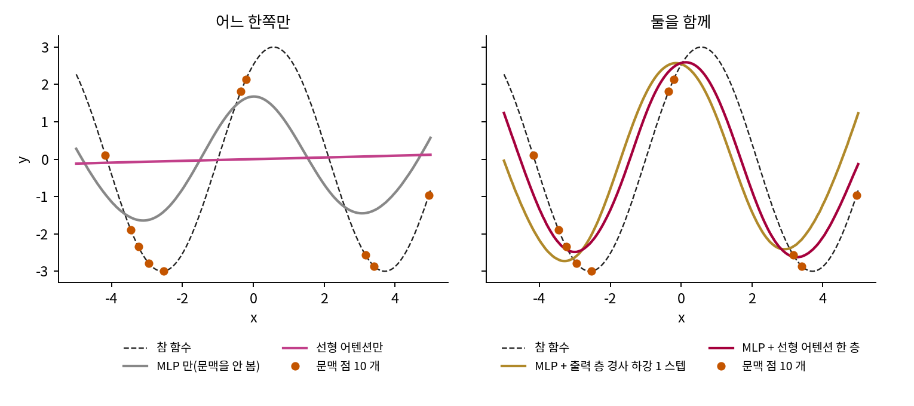

문맥 안의 학습: 파라미터는 그대로인데 배운 것처럼 보이는 일
어텐션과 MLP, 그리고 역전파
지금까지의 어텐션은 시험 입력에 대해 선형이어서, 문맥을 어떻게 주어도 답은 x 의 선형 함수이고 곡선을 따라가야 하는 태스크는 풀 수 없다. 그런데 트랜스포머에는 어텐션 말고 MLP 가 있으니, 둘을 함께 쓰면 무엇이 달라지는지부터 재 본다.
곡선을 맞히는 태스크
태스크마다 진폭 a 와 위상 ρ(로: 사인파가 옆으로 밀린 정도)를 뽑아 y = a sin(ρ + x) 를 정하고, 문맥에 점 열 개를 주어 다른 점의 y 를 묻는다. 메타 학습에서 오래 쓴 태스크(핀 팀, 2017)이고 폰 오스발트 팀도 이 태스크로 실험했다. 네 모델을 같은 스텝(20,000)과 씨앗 셋으로 학습했다(sources/in-context/sine_mlp.py).
no_ctx 평균 3.0615 범위 3.0518~3.0738
lsa 평균 4.2505 범위 4.2491~4.2520
mlp_gd 평균 0.4867 범위 0.3904~0.5723
mlp_sa 평균 0.3601 범위 0.3335~0.3776
늘 0 을 답함 4.2722649574279785
씨앗 0: mlp_gd 와 mlp_sa 예측의 상관 0.9616, 평균 제곱 차이 0.2896
씨앗 1: mlp_gd 와 mlp_sa 예측의 상관 0.9893, 평균 제곱 차이 0.0869
씨앗 2: mlp_gd 와 mlp_sa 예측의 상관 0.9628, 평균 제곱 차이 0.2599

선형 어텐션만 쓴 모델은 시험 손실 4.2505 로, 늘 0 을 답하는 4.2723 과 거의 같다. MLP 만 쓴 모델은 문맥을 안 보므로 태스크마다 다른 a 와 ρ 를 알 길이 없어 3.0615 에 머문다. MLP 뒤에 선형 어텐션 한 층을 붙이면 0.3601, 어텐션 대신 정말로 경사 하강 한 스텝을 넣으면 0.4867 이다. 씨앗 사이의 차이(경사 하강 쪽 0.3904~0.5723, 어텐션 쪽 0.3335~0.3776)를 생각하면 어텐션 쪽이 조금 낮다고만 말할 수 있고, 두 모델의 예측 상관은 0.9616~0.9893 이어서 논문의 그림만큼 겹치지는 않았다. 문맥이 있어야 하고 MLP 도 있어야 한다는 것은 분명하다.
폰 오스발트 팀은 이 조합을 명제 2 로 적었는데, MLP 를 지난 토큰 위에서 어텐션이 아래 손실을 내려가도록 가중치를 놓을 수 있다는 내용이다.

그럼 끝났네. MLP 랑 어텐션을 번갈아 쌓으면 신경망을 학습하는 거잖아.

잠깐. W 는 맨 위 한 층이야. 맨 위 층의 그래디언트는 오차 곱하기 입력이라 바로 나오잖아. 역전파가 필요한 건 그 아래층들이고.

아래층인 MLP 는 문맥을 읽어도 안 바뀌네. 그러면 이건 역전파가 아니라 마지막 층만 고치는 거구나.
역전파까지 간 구성
여러 층 신경망의 모든 가중치를 문맥 안에서 고치는 구성은 2023~2024년에 나온 두 편에 있다.
앙겔리키 지아누(Angeliki Giannou) 팀의 「Looped Transformers as Programmable Computers」(2023년 1월 arXiv)는 트랜스포머를 컴퓨터로 만들었다. 문맥이 천공 카드처럼 명령과 메모리를 담고, 어텐션과 ReLU 층을 묶은 인코더 13층이 명령 한 줄을 실행한 뒤 출력을 다시 입력으로 받는다. 그 위에서 2층 신경망의 역전파를 프로그램으로 적어 돌린다. 논문의 보조 정리 15 는 층 13개, 헤드 하나, 폭 O(log D + d)(D 는 데이터 수, d 는 입력 차원)로 그 신경망의 SGD 를 오차 ε(입실론) 안에서 실행하는 트랜스포머가 있다고 말한다. 층이 더 깊은 신경망은 프로그램이 길어질 뿐이라고 적었다.
왕즈제(Zhijie Wang) 팀의 「In-context Learning on Function Classes Unveiled for Transformers」(ICML 2024)는 루프 없이 층을 쌓는다. 2층 신경망이면 트랜스포머 2층으로 충분하다. 첫 어텐션이 문맥 점마다 신경망의 예측을 근사해 적고, 그 뒤 MLP 가 손실의 미분을 적고, 둘째 어텐션이 그래디언트를 모아 w − η∇𝓛(∇ 는 나블라) 를 적고, 마지막 MLP 가 범위 안으로 자른다. n층 신경망이면 트랜스포머 층 수가 O(n²) 로, 헤드 수와 폭이 오차 ε 에 대해 ε⁻² 로 늘어난다. 「역전파」라는 말은 쓰지 않았고, 정리가 보장하는 것은 근사한 경사 하강 한 스텝이다.
| 논문 | 문맥 안에서 고치는 것 | 층 | 가중치를 누가 정했나 |
|---|---|---|---|
| 폰 오스발트 팀 2023 명제 1 | 선형 모델 하나 | 스텝마다 선형 어텐션 1층 | 손으로 놓고, 학습으로도 재현 |
| 폰 오스발트 팀 2023 명제 2 | MLP 위 선형 층 하나 | MLP + 어텐션 | 손으로 놓고, 학습과 비교 |
| 지아누 팀 2023 | 2층 신경망 전체(시그모이드, 역전파 + SGD) | 13층을 루프로 반복 | 손으로 정함, 학습 없음 |
| 왕즈제 팀 2024 | n층 신경망 전체(근사 경사 하강) | O(n²) 층, 스텝마다 쌓음 | 있다는 증명, 학습이 찾는다는 증명은 아님 |
그러니 「어텐션과 MLP 를 여러 층 쌓으면 역전파에 해당하는 계산을 할 수 있다」는 말은 있다는 증명으로서 맞다. 지아누 팀은 역전파를 그대로 돌렸고, 왕즈제 팀은 같은 그래디언트를 어텐션과 MLP 로 근사했다. 어느 쪽도 GPT 를 학습하면 그 가중치가 생긴다고 말하지 않는다.
트랜스포머 13층을 직접 짓지는 않고 지아누 팀의 전제 하나만 시험했다. 역전파가 정말 mem[c] = f(mem[a], mem[b]) 형태의 명령 몇 줄로 다 적히는가? 입력 2차원, 은닉 3칸, 시그모이드인 2층 신경망으로 적어 자동 미분과 비교했다.
# sources/in-context/backprop_program.py 에서 (발췌, 뒤로 가는 줄들)
("d2", "sub", "o", "y"), # delta2 = o - y
("d1", "mul", "W2", "d2"), # W2 (o-y)
("s", "sigmoid", "z", None), # sigma(z)
("one_s", "sub", "one", "s"), # 1 - sigma(z)
("dsig", "elem", "s", "one_s"), # sigma'(z) = sigma(1-sigma)
("d1", "elem", "dsig", "d1"), # delta1 = sigma'(z) * W2 (o-y)
프로그램 줄 수(한 데이터 점): 16
자동 미분과의 최대 차이(점 1000 개): 5.551e-17
논문 Lemma 15 의 층 수 13 을 곱한 층 통과 수(줄 수 x 13, 우리 추정): 208
SGD 로 작은 태스크를 푼다(XOR, 학습률 0.5, 1 에포크 = 점 4 개). 프로그램 대 torch
에포크 0 손실 1.851960 | torch 1.851960 | 출력 [-1.372, -1.467, -1.225, -1.376]
에포크 10 손실 0.193589 | torch 0.193589 | 출력 [0.856, 1.036, 0.132, 0.248]
에포크 20 손실 0.113134 | torch 0.113134 | 출력 [0.593, 1.037, 0.321, 0.303]
에포크 50 손실 0.000000 | torch 0.000000 | 출력 [0.0, 1.0, 1.0, 0.0]
에포크 100 손실 0.000000 | torch 0.000000 | 출력 [0.0, 1.0, 1.0, 0.0]
에포크 2000 손실 0.000000 | torch 0.000000 | 출력 [0.0, 1.0, 1.0, 0.0]
파라미터 최대 차이 1.9984014443252818e-15
실행한 줄 수 128064
열여섯 줄이면 자동 미분과 반올림 오차까지 맞고, 그 줄을 되풀이해 XOR 도 풀린다. 이 스크립트가 보인 것은 프로그램이 짧다는 데까지이고, 트랜스포머가 그것을 실행한다는 부분은 논문의 증명에 기대며, 줄마다 13층을 곱한 208 은 우리 추정이다.
문제 3. 13층이면 GPT-2 도 역전파를 하고 있을까
GPT-2 는 12층이고 지아누 팀의 구성은 13층이다. (가) 위 출력에서 역전파 한 번에 층을 몇 번 지나는가? 지나는 횟수를 GPT-2 의 12층과 비교하면 어떤 차이가 드러나는가? (나) 지아누 팀과 왕즈제 팀의 정리는 「그런 가중치가 있다」고 말한다. GPT-2 의 가중치에 대해서는 무엇을 말해 주는가? (다) GPT-2 가 cloudzip 을 쓸 때 역전파나 경사 하강을 돈다고 주장하려면 무엇을 재야 할까?

13층이랑 12층이면 거의 같은데, 한 층 차이면 GPT-2 도 비슷한 걸 할 수 있다고 봐야 해요?

(가)의 숫자부터 볼까요?
줄이 16 개니까 16 × 13 = 208 번… 아, 지아누 팀 것은 13층을 루프로 돌리는 거였지. GPT-2 는 한 번 통과하면 끝이고요.

그리고 13층이 할 수 있다는 건 가중치를 그 값으로 놓았을 때 얘기잖아. (나)는 아무것도 안 말해 주는 거 아니에요? 있다는 것과 GPT-2 가 그렇다는 것은 다르니까.
그러면 (다)는요? 회귀에서는 무엇으로 확인했죠?

가중치 곱을 구성과 비교했어요. 그런데 GPT-2 는 토큰이 (x, y) 로 안 생겼으니까 비교할 구성이 없네요. 일단 층 안 어디에 모델 같은 게 적혀 있는지부터 찾아야 하나.

네. 아큐렉 팀이 작은 회귀 모델의 활성값에서 가중치 벡터를 읽어 낸 프로브 실험이 그런 방향의 시작이에요. 언어 모델에서는 아직 답이 나오지 않은 물음이고요.